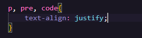
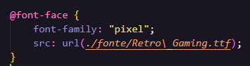
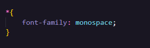

Como dito anteriormente existem 2 formas eficientes de se persolanizar uma página HTML, o stylo interno e externo.
No stylo interno, você vai personalizar no Head dessa forma:
Porém essa forma só é eficiente quando seu site só tem uma página. se você for usar mais de uma página no seu site o stylo externo é a melhor opção, você apenas irá linkar o arquivo CSS no Head e pronto!, tudo que você personalizar no CSS estará presente em todas as páginas do seu site.
A tag para alinhamento de texto é "text-align" onde você pode usar os seguintes parâmetros:
O center centraliza o texto.
O left alinha o texto na esquerda.
O rigth alinha o texto na direita.
O justify justifica o texto.
O start alinha o texto no começo da página.
O end alinha o texto no final da página.
Para usar o alinhamento de texto é simples,você escolhe a tag que quer fazer o alinhamento e escreve entre as {} "text-align" e escolhe o parâmetro.
Você pode estilizar varias tags de uma vez só como mostra a imagem a cima, basta apenas adcionalas com o uso de virgula.
De forma resumida você pode importar fontes com a tag "@font-face" que vai ser usada para importar sua fonte,você irá se deparar com os seguintes parâmetros, font-family e src: url() onde o primeiro você nomeia a fonte e no segundo você colcoa sua url, lembrando que toda tag que começa com @ tem que vir antes de tudo.
Já para colocar fontes dentro do style, você vai usar a tag "font-family" e colocar o nome da fonte que você importou ou uma nativa do HTML.
